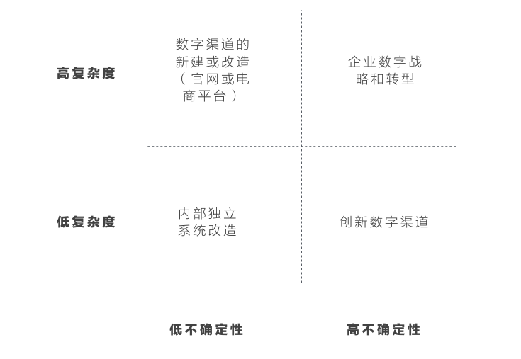

传统企业数字转型趋势不可逆转，数字转型并非推出几款数字产品或服务那么简单，它所面临的复杂性，以及对传统企业架构的冲击可能是前所未有的，本文将对数字转型复杂度进行讨论。
数字转型的脉络
传统企业数字转型从外部来看通常遵循以下脉络：
数字营销（Digital Marketing）：数字转型的初端，通常是市场部门的数字化尝试——将内容数字化、寻找数字营销公司进行数字化营销、制作更加适合数字传播的广告、视频、事件等；接下来则开始管理多个第三方数字渠道、开始利用邮件、搜索引擎、H5页面和社交网络进行营销活动，此时数字化依然还停留在数字化营销的范围，大部分的客户交互是单向，无法形成服务闭环；
 （别克与天天果园推出的英朗节气葡萄礼盒H5页面）
（别克与天天果园推出的英朗节气葡萄礼盒H5页面）
数字渠道（Digital Channels）：接下来第三方渠道已经不能满足企业的需求，企业开始包装一些现有的价值给现有客户，例如搭建自己的App、电商渠道等，通过第三方数字渠道汇聚的流量被导入在各个数字产品中，这个阶段企业出现了大量的App、企业微信服务号，包括电商平台的出现；
数字服务（Digital Services）：接下来问题来了，一个数字渠道通常只能负责客户一个阶段的需求而无法完成一个端到端的服务，这时候企业开始思考如何将各个渠道打通，还包括线下的服务，完成一个整体的服务体验；
数字伙伴（Digital Partners）：我们的数字消费者在完成一个目的（Purpose）时出现了大量的选择，例如上网买东西，可以选择线上购买店内取货、也可以线上预定店内购买店内取货、还可以线上预定两小时到货，最后这个选择就需要现有数字生态的其他服务合作伙伴完成，例如星巴克在西雅图与第三方On-demand快递服务商Postmate合作推出即时的 咖啡配送服务。
各部门的数字冲突
传统企业通常按照市场、产品、研发、销售、售后、和战略划分组织结构，数字在一开始很少成立独立的业务群（Business Division），这时候最常见的情况是各个部门都开始拓展自己的数字领地（Digital Territory）。
最常见的是市场部门从数据内容到数字渠道、甚至到数字产品的染指，这个过程被称之为数字营销（Digital Marketing）如下图所示：

市场部门从最初的只转化内容到数字形式、到管理各个现有的数字渠道、到开始自建一些「拥有独立客户价值」的数字产品（例如用于产品展示的应用）作为独立的数字渠道，数字领地被大大的扩充。
进入数字渠道的领域时，必然与现有数字渠道产生冲突，重复制造不符合统一数字体验的小型营销型产品层出不穷。
再看另一个数字领地的扩充。通常企业里第一个真正具备产品特性的数字产品，通常是电商平台——独立实现一个端到端的客户价值。如果我们看大部分企业的电商规划，都有以下特点：
- 都想建立自己的数字营销策略（独立的数字内容和渠道）；
- 都想向下拓展到售后服务的无缝连接；
- 甚至拓展到更广阔的数字合作伙伴（例如支付平台、第三方平台引流、第三方线下服务商等）。
从这个角度，产品部门的数字领地尝试向上和下同时扩张，如下图所示：
电商部门的领导开始抱怨自己的市场团队没办法快速响应，线下营销无法和线上整合，各种营销活动并不向自己的渠道引流；另一方面，又开始抱怨下游客户服务无法和自己对接，无法形成端到端服务。这就是我们常常说的线上下的「左右互博」。
服务部门也同样思考数字化的问题，电信互联网产品没有售后的概念，所有服务都在统一一个渠道中完成，服务部门希望将自己售后服务数字化就免不了需要向上对接数字渠道中的用户体验，但同时电子渠道上客户对服务即时性要求极高，现有服务团队无法对接，只好独立开来，而独立的结果又带来一致性体验的问题。值得一提的是，企业大部分一致性问题都来自，在传统企业结构下，各个部门间数字化程度的不一致，以及没有组织级别数字战略进行协调而产生的冲突与重复规划。
从我们深入企业的情况来看，这些冲突显得特别明显，总体来说表现在以下四个方面：
- 数字成熟度较高的电商渠道尝试整合上游数字营销、下有售后服务（目前电商的远期规划已到达售后部分）；
- 数字复杂度较低的市场部门尝试制造更多具有渠道性质的数字产品（例如多款让客户进行自定义的类似产品）；
- 数字成熟度低且难度较高的售后服务部门尝试向上整合，推出只针对售后阶段的数字化服务渠道（例如推出一款针对某特定需求的售后服务）；
- 战略部门尝试采用跨越式的方式建立更广阔的数字生态（例如讨论在更多生活方式上的拓展和数字化尝试）。
思考企业数字转型服务
在所有这些复杂度背后，是错综复杂的人事关系、组织形式、流程指标、文化和能力，同时也拥有极高的不确定性，除了来自外部市场的不确定，更来自组织内部的变化，我们所面对的是一个复杂的社会问题，而不是一个工程问题。
在我过去的实践里，我完成过复杂度低的、不确定性低的事情，例如一个内部小工具、小系统的规划和搭建，它本身独立于企业内部系统、范围和需求相对稳定；
也有复杂度低、不确定性高的事情，例如一个创新型的产品，需求极为不确定，却并不需要考虑对现有系统的依赖；
还有复杂度高、不确定性低的事情，例如一个大型企业的官网改造，需求不会超出我们的预期太多，也容易控制，但对于内部系统的依赖极高，协调内部需求的难度大，项目复杂度高；
而我们今天对于数字转型所遇到的，是一个极高复杂度和极高不确定性的任务。

如果我们把一些我们的服务放在这个矩阵当中，我们可以看到这样一个
精益思想似乎突然成为了企业数字转型的选择，但无论是精益企业（Lean Enterprise）、精益PMO、设计思维无不解决的是「为什么做？」、「为什么不做？」、「做什么？」、「怎么做？」的问题，这些通常是解决不确定性的问题，而无关于企业数字转型真正的复杂度。
不确定性（Uncertainty）和复杂度（Complexity）有着截然不同的区别，前者往往是基于观点（An opinion）的——因为对事实了解的缺少而形成，后者往往基于事实（A fact）的——由系统中的元素、关系、过程、人、发展方向决定。
以精益思想为基础的众多实践都是在倾向于解决不确定性，例如验证性学习（Validated Learning），但对于整个系统的复杂度影响较小，后者可能永远都不可能降低，也不以人的主观意识为转移。
这解释了早期产品验证活动（如Inception）为什么对于方法论、自信的引导人要求更高，是因为引导性的方法事实上影响力人们对于不确定性的判断——深处森林中的人需要一张地图，无论地图到底是对是错。
这也解释了尝试用「价值驱动」来简化讨论对于降低系统复杂度没有意义，它只能用一种「认知」的方式让大家降低不确定性，换言之，尝试建立统一的价值体系解决企业数字转型的复杂度，是徒劳的。
写在最后
在深入企业进行咨询的过程中我经常会被问到：「这样会不会让事情变得更复杂？」我的回答是：「对抗高复杂度的方式可能是高复杂度本身。」也许理想中的「化繁为简」是我们的臆想，也许就不存在一个简单的方案解决一个复杂问题。
我曾深入一个个没那么复杂的系统里帮助客户解决大量不确定性的问题，例如创业公司寻找产品方向、传统公司设计一个互联网产品、一个产品如何实习服务整合。这些工作的核心在于不确定性，而本身并不是一个复杂系统。
但深入到一个有百年历史的超大组织，尝试转变整个组织朝向数字化方向进行转型，我们所面对则是一个超大规模的复杂系统，我们传统的思想、框架、方法论也许都需要改变，无论如何，理解这个复杂系统、尊重这个复杂系统、和它共生、不期待用一个简单化的方法解决，是尝试的第一步。